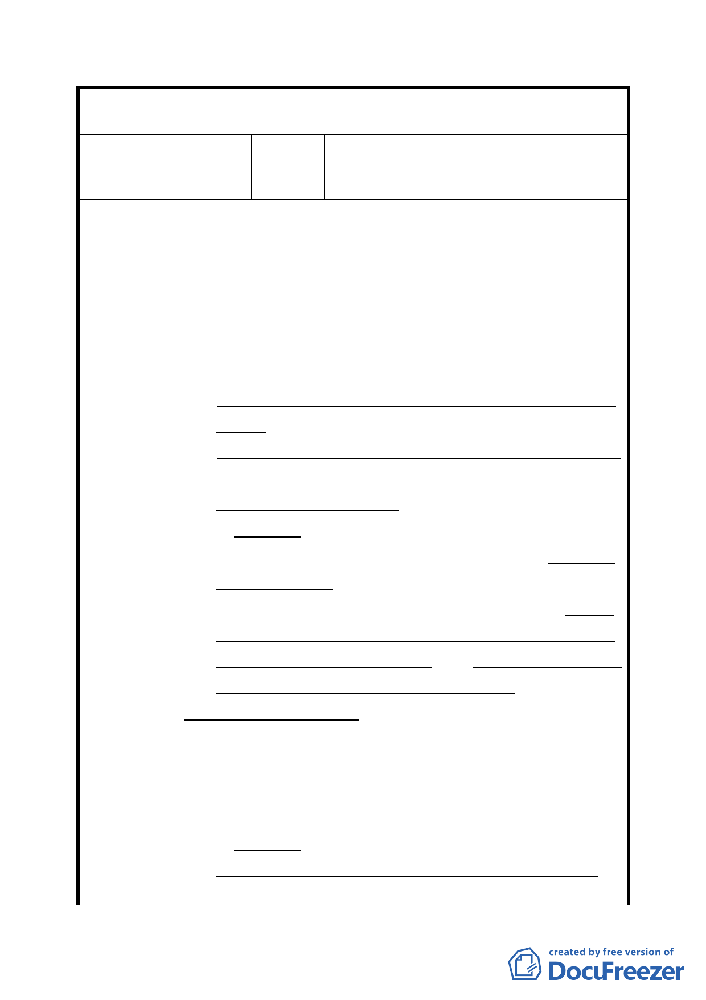

臺北市都市計畫委員會公民或團體所提意見綜理表
案 名 指定臺北市整建住宅為策略性再開發地區案
台北市中正區林興里里長 吳慶沛、水源
編 號 １ 陳情人 路四、五期整宅都市更新會理事長 蔡曾
月靜
一、23 處整建住宅為政府遷台初期（1962～1975 年），為安
置公共設施拆遷戶，台北市政府運用國民住宅基金所興
建之整建平民住宅，每戶 8～12 坪，居住面積及公共設
施早已不敷所求，環境窳陋，目前均已亟須改善居住環
境及更新重建，然多年來除《水源整宅一期/林口社區》
因捷運災變經居民自力更新已改建完成外，均因機制不
完備、整合不易及無建商介入利基而延宕不前。
故感謝中央及市府願將此歷史留下之課題納為重大政策
來推動。
二、依都市更新建築容積獎勵辦法第 14 條第 1 項第 1、2、3
款將台北市 23 處整建住宅基地指定為策略性再開發地
區，尚有下列課題須解決︰
（一）容積課題-
陳情理由
因現有容積高，且各戶持分土地面積過小，故整宅所有
權人依獎勵上限（各該建築基地 2 倍之法定容積或各該
建築基地 0.5 倍之法定容積再加其原建築容積）自行出
資更新後，除少數位於商業區者外，均無法達到平均居
住水準之目的，實無改建誘因。（詳內政部 98.7.16 內授
營更字第 0980106121 號函會議結論（二））
《例》水源整宅 4、5 期
本案基地面積 3,035 ㎡，扣除市有土地 787.66 ㎡後為 2247.34
㎡，每戶平均 12.70 ㎡（3.85 坪），現有容積 260.36%，依本
提案規定，容積獎勵上限為 450%，每戶平均容積 57.15 ㎡
（17.29 坪），遠低於臺北市平均水準 93.9 ㎡（28.4 坪）/戶。
（二）資金課題-
現有容積已超過法定容積，無傳統合建建商介入之空
間；且所有權人土地持分少，人數眾多，貸款餘額低，
-7-